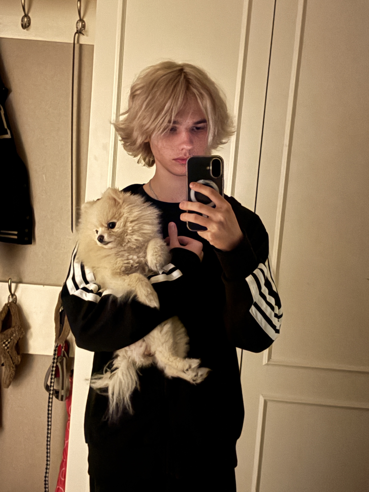

Software Developer

Nog geen werkervaring, maar actief bezig met ontwikkelen van skills tijdens mijn opleiding.
Ik ben een enthousiaste en gemotiveerde software developer in opleiding, met een passie voor het creëren van innovatieve digitale oplossingen. Mijn interesse in technologie begon op jonge leeftijd, en ik heb altijd al een nieuwsgierigheid gehad naar hoe dingen werken. Tijdens mijn studie aan het Grafisch Lyceum Rotterdam heb ik een solide basis gelegd in verschillende programmeertalen en webontwikkelingstechnieken. Ik ben leergierig en altijd op zoek naar nieuwe uitdagingen om mijn vaardigheden verder te ontwikkelen. Mijn doel is om impactvolle software te creëren die het leven van mensen verbetert, en ik ben vastbesloten om mijn carrière in de technologiebranche voort te zetten.
📍 Den Haag
📞 +31 6 85404663
✉️ Slavikdem008@gmail.com